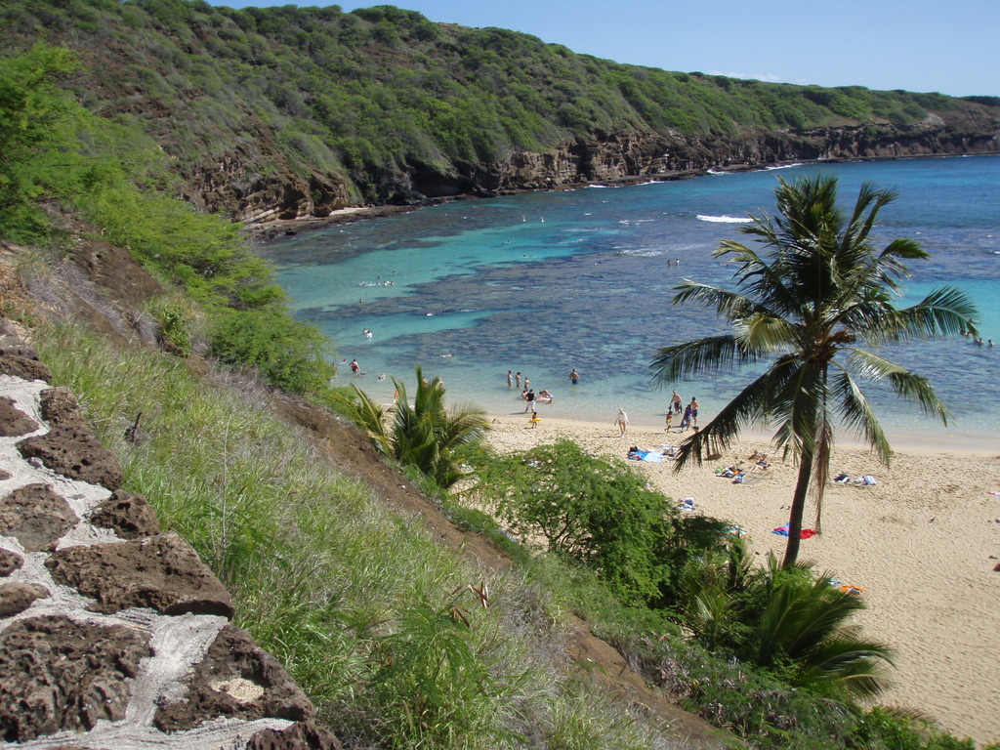

Waikiki

Waikiki is the most well known area of Oahu. Here there are many shops, restaurants and hotels for people visiting to go to. Waikiki beach is always packed with many sunbathing tourists. Waikiki is located on the South side of the island very close to the capital city of Honolulu. However, if you've ever visited Honolulu it is just another big city with aloha shirts.
Probably one of the main reasons that Waikiki is very popular among tourists is the weather. The average rainfall over the period of data is only 0.049 inches and a max rainfall of 4.2 inches, but as we can see in the graph this only occured about 2 times over the last seven years.
